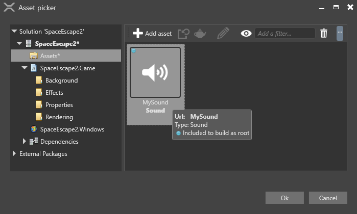

Non-spatialized audio
Beginner Programmer
Non-spatialized audio sounds the same throughout the scene, regardless of the position of entities (such as the player camera). It's stereo and moves along a single axis (usually the X-axis). Unlike spatialized audio, the volume, pitch (frequency), and other parameters of spatialized audio don't change. This is useful, for example, for background music and menu sound effects.

Non-spatialized audio requires no audio emitters or audio listeners.
1. Import audio and include it in the build
Make sure the audio asset is a root asset. Root assets are assets that Stride includes in the build so they can be used at runtime.
In the Asset View, right-click the asset and select Include in build as root asset:
If the menu option reads Do not include in build as root asset, the option is already selected and you don't need to change it.
2. Create a script to play audio
To play non-spatialized audio at runtime, create an instance of it and define its behavior in the code.
The SoundInstance controls audio at runtime with the following properties:
| Property | Function |
|---|---|
| IsLooping | Gets or sets looping of the audio. |
| Pan | Sets the balance between left and right speakers. By default, each speaker a value of 0. |
| Pitch | Gets or sets the audio pitch (frequency). |
| PlayState | Gets the state of the SoundInstance. |
| Position | Gets the current play position of the audio. |
| Volume | Sets the audio volume. |
For more details, see the SoundInstance API documentation.
Note
If the sound is already playing, Stride ignores all additional calls to SoundInstance.Play. The same goes for SoundInstance.Pause (when a sound is already paused) and SoundInstance.Stop (when a sound is already stopped).
For example, the following code:
- instantiates non-spatialized audio
- sets the audio to loop
- sets the volume
- plays the audio
public override async Task Execute()
{
// Load the sound
Sound musicSound = Content.Load<Sound>("MySound");
// Create a sound instance
SoundInstance music = musicSound.CreateInstance();
// Loop
music.IsLooping = true;
// Set the volume
music.Volume = 0.25f;
// Play the music
music.Play();
}
Alternative: create a script with public variables
Create a public variable for each audio asset you want to use. You can use the same properties listed above.
For example:
public class MySoundScript : SyncScript
{
public Sound MyMusic;
private SoundInstance musicInstance;
public bool PlayMusic;
public override void Start()
{
musicInstance = MyMusic.CreateInstance();
}
public override void Update()
{
// If music isn't playing but should be, play the music.
if (PlayMusic & musicInstance.PlayState != PlayState.Playing)
{
musicInstance.Play();
}
// If music is playing but shouldn't be, stop the music.
else if (!PlayMusic)
{
musicInstance.Stop();
}
}
}
Add the script to the entity
In the Scene view, select the entity you want to add the script to:

In the Property Grid, click Add component and select your script:
The script is added to the entity.
If you added public variables to the script, you need to tie them to audio assets.
Drag and drop an asset from the Asset View to each variable:

Alternatively, click
 (Select an asset):
(Select an asset):
Then choose the audio asset you want to use:
